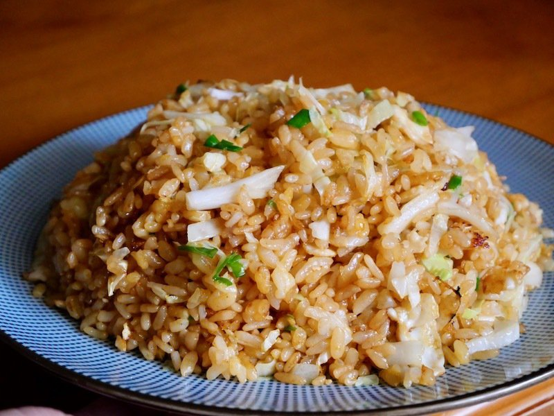

Fried Rice
Return to main page

This is a recipe commonly used in one of the most popular restaurants in Taiwan
Ingredients
- Eggs
- Left over rice (plain/white)
- Green vegetable of choice(cabbage/spinach/bok choy/etc.)
- Meat of choice(chicken/pork/beef/shrimp/etc)
- Salt
- Pepper
- Others(personal prefference: corn/green onions/onions/etc)
- Oil
Steps
- Crack one egg and mix it into the cold rice
- Heat the oil on high in a large wok or frying pan
- Crack an egg into the pan
- Immediately after scrambled and cooked, add rice
- Cook meat in seperate pan
- Once rice reaches desired texture, add vegetables and cooked meat